本文档适用于车辆编号为：2019051~2019080¶
客户车辆铭牌编号为：2019001~2019016的车辆请参考文档 ‘’底盘Quick_Start_V01‘’
客户车辆铭牌编号为：2019017~2019046的车辆请参考文档 ‘’底盘Quick_Start_V02‘’
车身铭牌号位于车身侧面的铭牌，如图：

快速介绍¶
欢迎您选择百度Apollo自动驾驶开发套件(Apollo D-KIT Lite)，一款为开发者而生的自动驾驶开发软硬件平台。该套件采用纯线控底盘+高扩展硬件结构平台的方式，搭载多传感器套件，参照多冗余安全机制设计并可提供持续的开发资源，帮助您轻松实现硬件集成，降低自动驾驶门槛，加速您的自动驾驶研发进程。此Quick start旨在帮助您快速了解Apollo套件的组成和使用注意事项，确保安全同时延长套件的使用寿命。如果您在使用过程中遇到问题或者有更好的建议给我们，欢迎在apollo开发者社区群一起讨论或者在Apollo开发者套件留下您的宝贵意见。
1. 车体整体结构简介¶
本产品主要由两部分组成，分别为底盘部分以及车体部分，如下图：
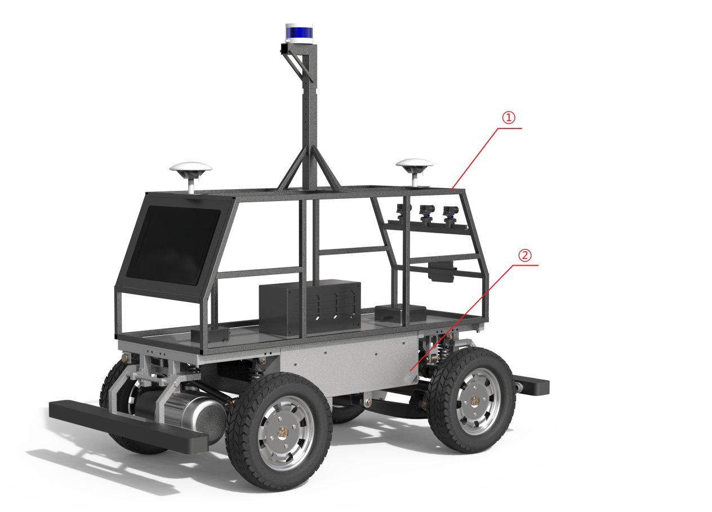
整车右后视图 ①车体部分 ②底盘
其中底盘包含如下部件，其结构图如下：
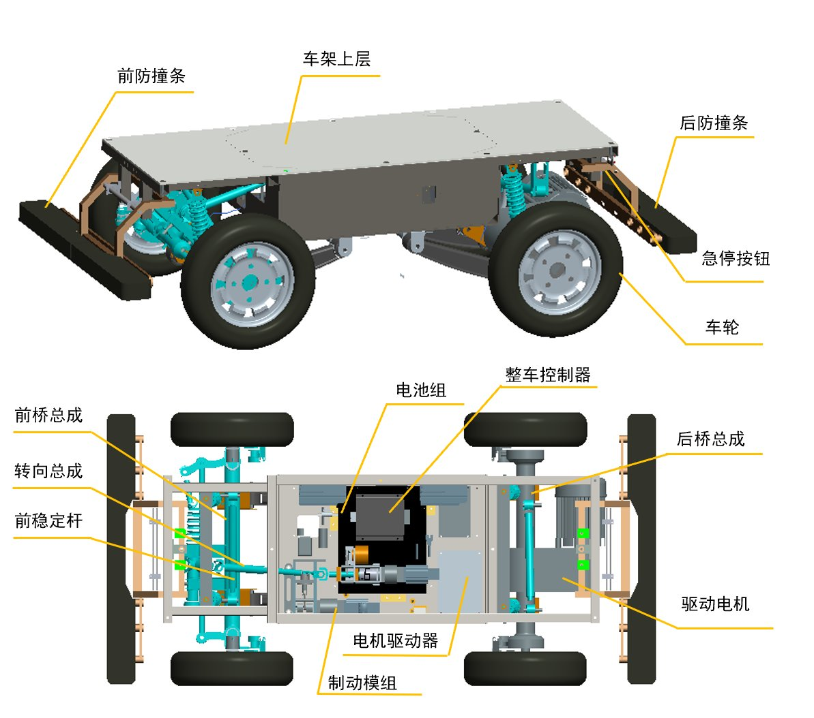
上装车体的结构如下图所示：
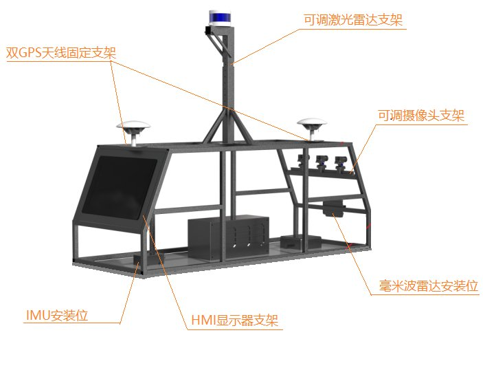
车体整体安装实物如下：
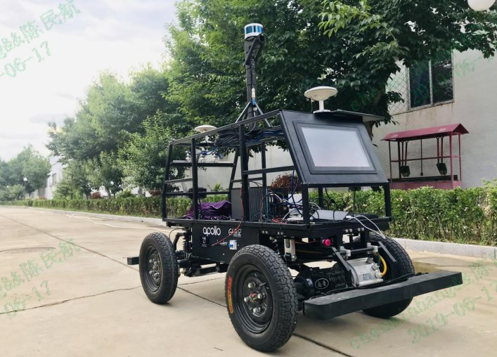
注意：下图所示两个DB9接口分别为底盘CAN线和底盘升级口，上边是CAN线接口，与IPC CAN0连接。下边是底层软件升级口，不常用，后续面临版本升级时会开放使用；接线时请注意不要接错。
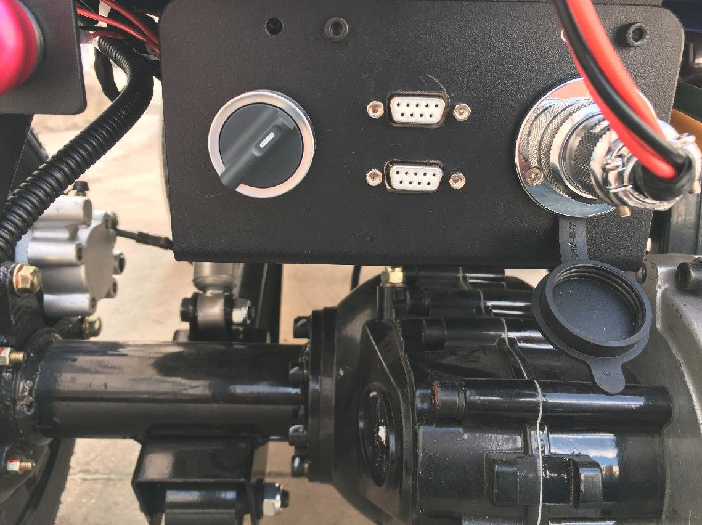
2. 电池¶
2.1 简介¶
本产品采用的是模块化锂电池组，电池组有正面和侧面两个操作面。其布置如图所示：
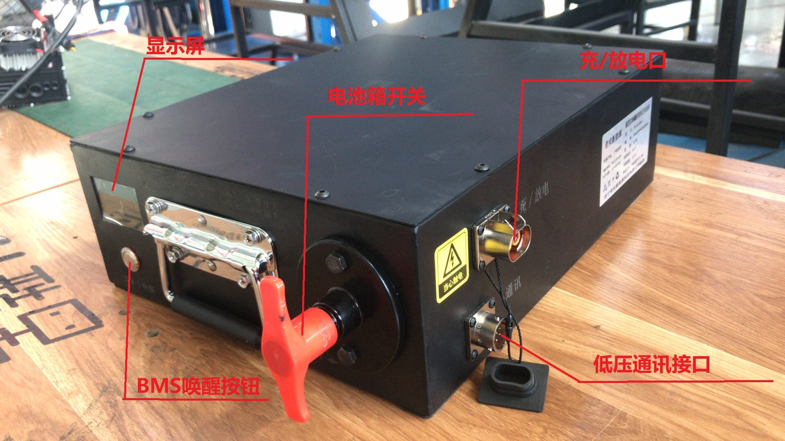
电池箱开关横置时为开启状态，竖置时为关闭状态。
2.2 取放方式¶
电池组安装在底盘右侧的检修口内部，安装方式如下： 1）确保车辆停放在安全位置，全车处于断电状态，同时电池开关位于关闭位置；
2）将电池组放入电池仓内；
3）将电缆与相应的高压放电插口和低压通讯插口连接妥当；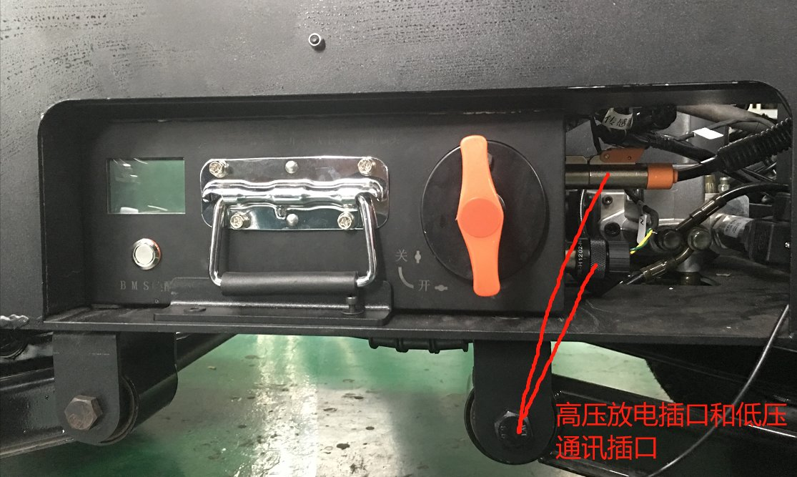
4）重新安装电池固定挡板用两个螺栓固定，确保电池固定板没有晃动的情况。
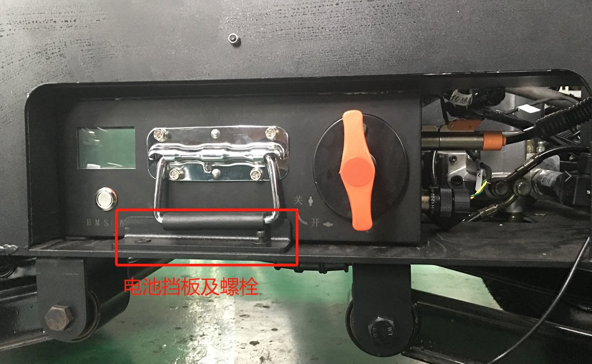
如果需要拆卸电池组，步骤相似。
警告：在确保全车断电且电池开关处于关闭状态下进行操作。
警告：请勿擅自使用其他型号或品牌的电池组，否则可能出现安全风险。
警告：请不要在电池出现破损或是故障后继续使用。否则可能导致电池损坏或人员伤亡。
警告：电池出现故障或报废后，请合理处置电池，遵守当地法规，否则可能导致严重环境污染。
警告：电池显示屏处为电子件散热区，谨防溅水。
警告：电池停止使用时请关闭手动开关，切断电源，避免安全隐患。
2.3 充电方式及注意事项¶
请按照电池身上充电步骤进行操作
充电方式：
1）请先按照本手册2.2的操作顺序将电池从底盘上拆卸下来；
2）按照电池正面充电步骤进行充电操作：
上电步骤：先插 充/放电插头，后开电池开关把手，最后接通220V电源
下电步骤：先关电池开关把手，后拔 充/放电插头；
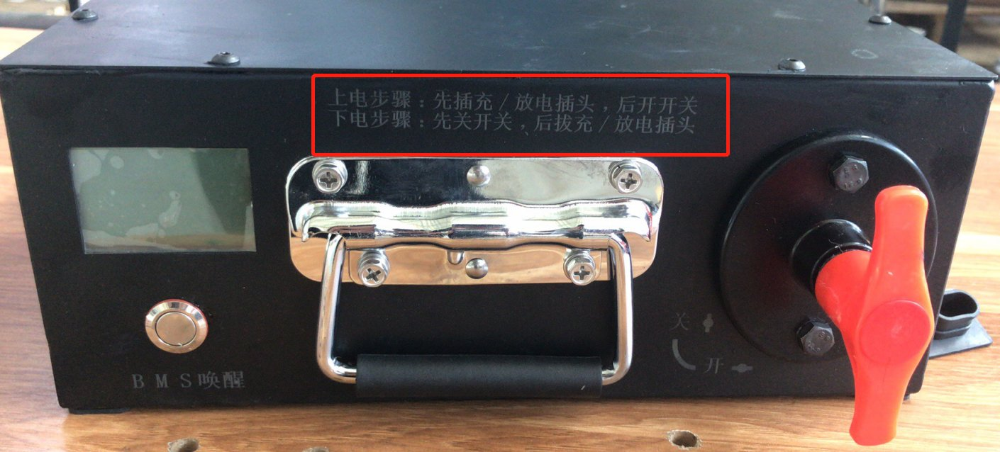
警告
警告：充电时，严禁触碰电池组输出端口！
警告：本产品严禁在电池组进行供电时进行充电操作！
警告：确保只使用原装适配的充电器对电池进行充电，否则有损坏或起火的危险！
警告：为保证运行安全及电池寿命，ECU设定的截止放电量为10% SOC，电量低于10%时请不要继续使用。强烈建议电量低于20%时就断电进行充电操作。测试完成及时整车下电，严禁电池过放
警告：电池需按照3.2电池取放方式拆卸后方可进行充电，禁止在车上直接给电池充电。
警告：严禁将电源靠近热源，严禁私自拆装电源。
警告：严禁短接，反接电源正负极。
警告：电源内部设有保护板及电子线路，注意防水，严禁涉水。
警告：在使用、充电或存储期间如发现电源变热、散发气味、变形或其他反常应立即停止使用。
警告：零度以下严禁充电。
警告：请用专配锂电充电器充电，不匹配充电器可能会带来安全隐患。
警告：电池显示屏处为电子件散热区，谨防溅水。
警告：电池停止使用时请关闭手动开关，切断电源，避免安全隐患。
2.4 上电及断电¶
在上电/断电之前，先确保车辆停放在安全位置，并将急停开关拍下。
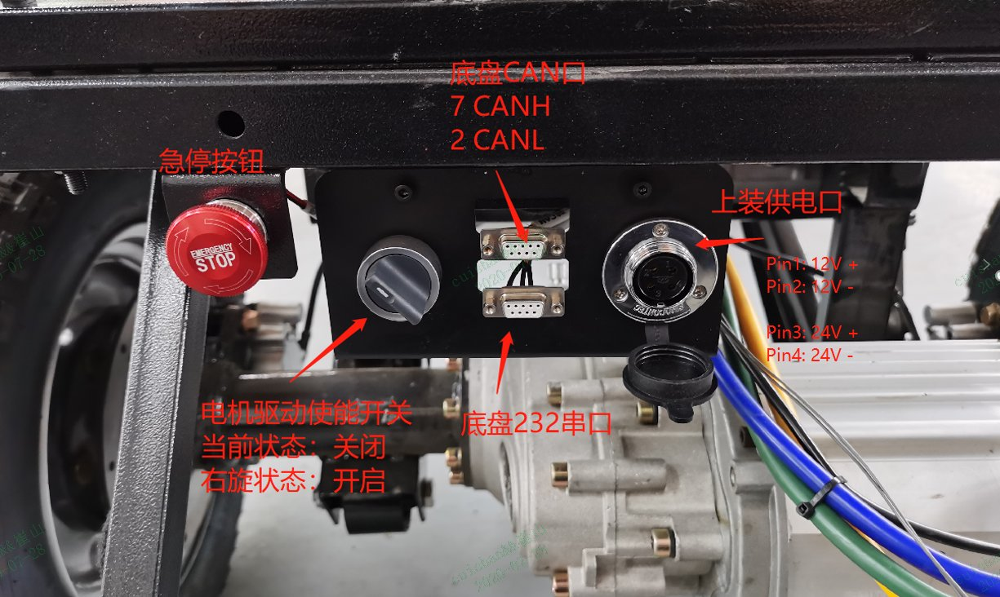
1）上电
按照2-2中的指示将电池组装入底盘检修口；
a.将电池开关置于开启位置,就可以车辆通电：此时车辆可以执行除前进/后退之外的所有功能；
b.将底盘后面上的开关旋至图示位置，就可以为驱动电机上电。此时车辆完全供电.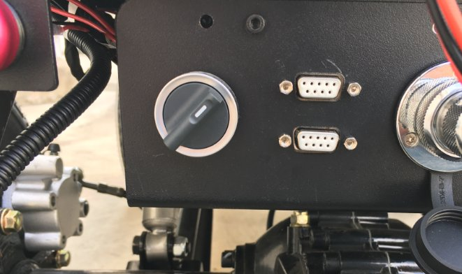
b.将底盘后面上的开关旋至图示位置，就可以为驱动电机上电。此时车辆完全供电，可执行车辆具备的所有功能；
2）断电
将底盘后面的开关左旋下电
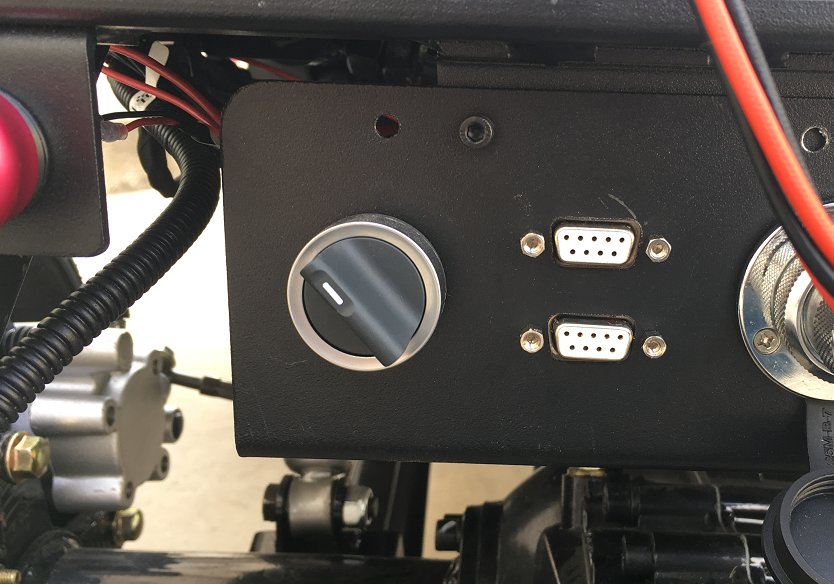
将电池开关置于关闭位置，即可完成全车断电。
3. 遥控器及注意事项¶
3.1 遥控器介绍¶
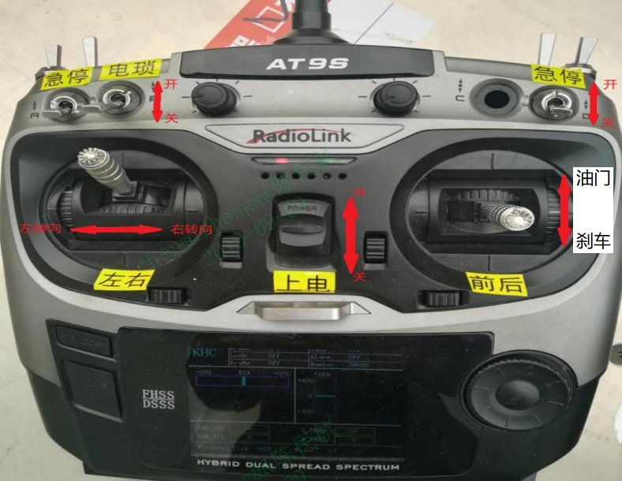

此遥控器采用8节5号电池进行供电，此外具有以下控制单元：
电源控制开关——power
左右控制摇杆——左右转向
前后控制摇杆——油门/刹车
电锁开关——B 接管/放权
急停开关——A/D
换档开关——默认D档，H键拨起不放，车为倒挡，缓缓将前后控制摇杆向前推加油，车辆倒车，向后拉前后摇杆刹车
调试开关——G，正常使用默认位于最下位置，拨起会使遥控器进入调试模式，影响您的正常使用。
注意：C/E/F目前处于空值状态，G为调试通道开关，操作遥控时默认开关C/E/F/G处于朝下（关闭状态）。
警告：出于安全考虑，在遥控器开启电源前请确保所有开关均处于关闭状态。
警告：进行电池更换操作前请关闭遥控器电源开关，以免出现危险情况。
警告：操作油门/刹车摇杆时，请注意当前档位，以免造成危险。
警告：遥控器电池长期不用建议取出，更换电池对接插针时请仔细识别正负。除8节5号电池外，您也可自行适配12V的可充电电池。
警告：遥控器电量不足时，会表现出遥控器上屏幕时暗时亮，在这种情况下，遥控会出现迟滞、不响应等情况，请及时更换电池。
3.2 开启和关闭¶
开启：
1）开启遥控器电源

2）开启电锁开关（接管）
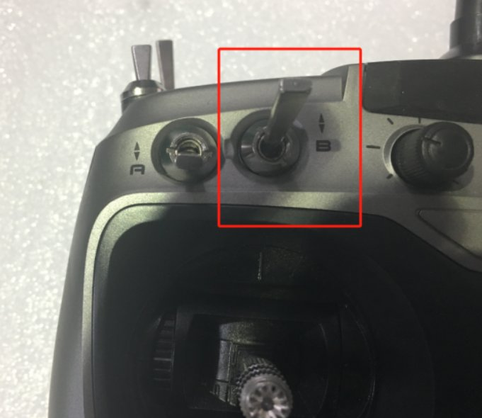
关闭：
1）先关闭电锁开关（放权）

2）关闭遥控器电源

提示：此底盘具有检测遥控器信号是否失联的自动保护功能，当底盘发现遥控器在没有关闭电锁的情况下失去信号，底盘会自动刹车；如果关闭遥控器电源先于关闭电锁，会让底盘误以为是遥控器信号失联，也会触发自动刹车保护。
警告：为了延长油压碟刹的寿命，长期停车时候避免处于制动状态。
3.3 电锁¶
电锁为遥控器的第二级开关，只有当电锁开关打开时，底盘才能够接受遥控器的控制，同理，如果车辆运行在自动驾驶模式下，想要使用遥控器接管车辆控制权必须首先打开电锁开关，否则无法接管成功。
3.4 急停¶
车辆急停由两个串列的急停开关控制，在电锁开关打开的状态下，开启这两个急停开关中的任意一个都将触发急停。 提示：当触发急停时，底盘前进后退控制无效。只有当两个急停开关同时处于关闭状态时，刹车才会释放，使操作人员可以控制车辆。
3.5 转向及行进¶
车辆的转向及行进由位于控制器中部的两个摇杆控制，在电锁开关打开的状态下，左侧摇杆控制车辆转向方向，右侧摇杆控制车辆前进和后退。 提示：摇杆带有自动回位功能，松开方向摇杆，底盘方向会自动回正；松开前进后退摇杆，底盘会停止运动。
警告：出于安全考虑，在人工接管驾驶时，请不要来回拨动遥控杆，避免突然刹车、突然转向等可能导致危险情况的出现。
3.6 遥控器安全机制¶
为了您的安全，在进入自动驾驶模式前，请务必提前熟悉遥控器的各项操作，尤其关于急停功能的使用，请在每次进入自动驾驶模式前进行遥控操作确认。为了您的安全，我们已在工控机与底层协议层定义了遥控器的绝对优先权，即平台移动的任何状态下（请在每次运行前确保遥控器电量充足），只要遥控器上电且电锁推起，平台即进入人工接管模式，为您的安全测试保驾护航
3.7 遥控器安全操作提示¶
1）开启遥控器电源前，确保所有按钮都是朝下（关闭状态），待遥控器启动后，旋开车辆急停按钮后，再打开电锁开关接管；
2）进入遥控器模式后，需要试车，即依次对各功能键进行检查，确认无误后方可采用遥控器控制车辆；
3）遥控器操控车辆起步时，请勿一次性将遥控器拨杆推到极限，以免发生危险，应慢慢推动遥控器拨杆，车辆缓缓启动后根据情况适当调节推杆，并时刻注意周围环境，危险情况下及时遥控器急停接管或者按下车辆的急停旋钮；另：遥控器左、右方向摇杆、油门、刹车摇杆需谨慎操作，避免转向、加速或刹车过急；
4）遥控器电量不足时，会表现出遥控器上屏幕时暗时亮，在这种情况下，遥控器控制车会出现迟滞、不响应等情况，请及时更换电池；
5）操作时如感觉遥控器异常，立即停车，如遇紧急情况时，立即使用紧急制动按钮停车；
6）临时停车状态下要养成打开急停开关的好习惯（A/D），长时间停车要按下车辆的急停按钮；
7）出于安全考虑，任何人在进行遥控器的操作前都应该仔细阅读相关说明和注意事项，请不要将遥控器交给不熟悉相关操作的人员使用，以免发生危险。
8）在车辆退出遥控控制模式前，需确保车辆在完全停止状态下，再退出；
9）由于该开发套件没有ABS防抱死系统，如果标定时出现车轮抱死现象，会导致标定采集数据无效，操作时一定要注意遥控器的操控，标定取值时也要注意X，Y，Z值的合理组合。
4. 硬件软件安装与调试¶
在了解了第3、4节的内容后，您已经可以使用遥控器完成非自动驾驶模式下的各项移动操作。由于与自动驾驶相关的硬件与软件的安装与调试过程较为复杂，相关的指引请参照github其它文档。
5. 使用场景限制¶
请参考产品手册。
6. 车辆安全机制¶
6.1 限速保护¶
无论自动驾驶模式或是遥控驾驶模式，ECU会将车速限制在一个比较安全的范围。小车的最高速度被限制为前进20km/h，后退10km/h，以防止严重的碰撞事故（为了实验安全，遥控或线控超出该速度范围会直接触发急停予以警告）。正常测试使用建议车速在~10km/h。 注意：安全起见，遥控驾驶车辆时建议最好将车速控制在10km/h左右，并时刻注意危险情况，随时做好接管准备，正常测试建议遥控器专人负责。
6.2 遥控接管优先级定义¶
当车辆处于自动驾驶模式时，如果出现偏离航向、车速过快或者有碰撞风险时，可以直接使用遥控器接管车辆的控制，遥控器所发出的控制指令的优先级永远高于自动驾驶系统所给出的控制指令，详细操作见4-1。
6.3 急停开关¶
急停开关位于车辆后方左下方，其实际位置如下图红框所示：
图6.1 急停开关实际位置图 当车辆在自动驾驶模式中有碰撞风险且无法使用遥控器时，随车人员可以根据实际情况选择拍下急停开关来实现全车制动，有效规避风险。
提示：急停开关被拍下后，车轮将会抱死，遥控器的指令也将无法对车辆进行操控，必须要在旋开急停开关以后，才能继续进行操作。
6.4 碰撞保护¶
车辆前后分别有一条防撞条，能够感应防撞条与车体间的压力从而判断是否发生了碰撞。当发生轻微碰撞时，碰撞保护触点开关感受到压力就会立即解除动力，并会出发刹车，待车停稳后自动复位，以防进一步伤害。此外，防撞条本身也能形成有效的隔离，一定程度上保护车辆和被撞物体。

7. 常见问题及解决方法¶
Q：车辆不启动怎么办？
A：首先请检测电池组是否为有电，电池组安装是否正确（包括接线是否正确），之后检查车辆是否正确上电。如经过上述操作仍无法启动，请在Apollo开发套件QA微信群反馈，会有相关技术人员为您跟进。
Q：控制器长鸣是什么问题？
A：出现控制器上电后长鸣现象，请确认急停开关是否开启，如急停开关已打开，依然长鸣一般为制动管路有泄露导致制动油压压力不足，控制器无法通过初始化安全自检，不能进入工作状态，可更换刹车油重启尝试。如确认制动管路正常且控制器依然长鸣，请在Apollo开发套件QA微信群反馈，会有相关技术人员为您跟进。
Q：车辆不响应遥控指令怎么办？
A：首先检查遥控器的两个急停开关是否处在关闭位置，然后检查遥控器电源开关是否处于开启位置，检查遥控器是否有电以及电锁开关是否处在开启位置。如上述操作后仍不能解决问题，请在Apollo开发套件QA微信群反馈，会有相关技术人员为您跟进。
Q：底盘上电车辆无自检动作，显示屏不亮，工控机不工作怎么办？
A：首先检查，车端供电插头是否跟电池放电端连接妥当，然后检查急停或者防撞是否工作，如果没反应，用万用表测量车尾部圆形航插中1# 2# 脚之间和3# 4# 脚之间的电压（正常1# 2#脚之间的电压为12V，3# 4# 脚之间的电压为24V），如测量无电压，可能是底盘内DCDC模块损坏，请联系线上技术支持。
Q：车辆无法进入自动驾驶？
A：首先检查遥控器是不是已经放权；然后通过第8章的方法查看底盘是否有故障上报。
Q：车辆正常上电后，遥控器只能控制转向，不能控制前进后退，但是有声音
A : 首先检查车辆急停开关是否被拍下以及遥控器急停键是否被打开；其次检查车后部的驱动电机钥匙开关是否打开；如果没有打开，按下述步骤：遥控器关机，然后打开驱动电机钥匙开关，遥控器上电，接管后可以控制车动作
8.通过chassis_detail查看车辆故障信息¶
通过执行cyber_monitor，查看底盘chassis_detail信息：
chassis_detail分为(1)check_response; (2)ch
ch部分分五个模块上报，分别是：(1)brake_status; (2)throttle_status; (3)steer_status; (4)ecu_status; (5)gear_status
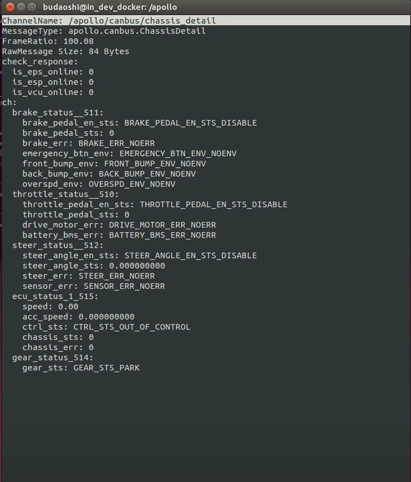
a. check_response
车辆进入自动驾驶后，相应的状态会由0变为1: is_eps_online:1; is_esp_online:1; is_vcu_online:1; 如果仍旧为0,说明没有进入自动驾驶，首先检查遥控器是否放权，若放权后还是不能进入再自动驾驶，请检查ch部分是否有故障上报。
b. ch
1） brake_status__511:
brake_pedal_en_sts: BRAKE_PEDAL_EN_STS_DISABLE(刹车状态)
brake_pedal_sts: 0 (刹车值)
brake_err: BRAKE_ERR_NOERR （刹车故障）
emergency_btn_env: EMERGENCY_BTN_ENV_NOENV （急停开关状态）
front_bump_env: FRONT_BUMP_ENV_NOENV （前防撞开关状态）
back_bump_env: BACK_BUMP_ENV_NOENV （前防撞开关状态）
overspd_env: OVERSPD_ENV_NOENV （超速保护）
2） throttle_status__510:
throttle_pedal_en_sts: THROTTLE_PEDAL_EN_STS_DISABLE (油门状态)
throttle_pedal_sts: 0 （油门值）
drive_motor_err: DRIVE_MOTOR_ERR_NOERR （驱动电机故障）
battery_bms_err: BATTERY_BMS_ERR_NOERR （电池故障）
3） steer_status__512:
steer_angle_en_sts: STEER_ANGLE_EN_STS_DISABLE(转向状态)
steer_angle_sts: 0.0000000 （转向角度）
steer_err: STEER_ERR_NOERR （转向故障）
sensor_err: SENSOR_ERR_NOERR （转向传感器故障）
4） ecu_status_1_515
speed: 0.00 （当前速度）
acc_speed: 0.000000000 （当前加速度）
ctrl_sts: CTRL_STS_OUT_OF_CONTROL （控制状态）
chassis_sts: 0 （底盘状态）
chassis_err: 0 （底盘故障码）
5）gear_status__514
gear_sts: GEAR_STS_DRIVE （档位）
9. 日常保养和维护¶
9.1 清洁和存储¶
1）底盘及车架如有灰尘或是污渍，可以用湿布进行擦拭；其它上装传感器器件也可以用同样的方式进行清洁，但是需要在擦拭过后用干布擦去表面的水分；工控机由于内部零件较为敏感且容易积攒灰尘，需要打开进行清洁。 2）摄像头在不使用时需要确保盖上相机盖，以免灰尘影响图像质量。 3）请勿随意使用酒精、汽油、煤油或其他具有腐蚀性、挥发性的溶剂对各个部位进行清洁。这些物质可能会损坏车体结构或是内部部件。 4）在进行清洁前，请确保车辆已经正确断电，否则可能导致漏电、触电的后果。 5）不使用时，请将车辆放在阴凉、干燥的位置，并用防尘罩进行遮蔽。请不要将车长时间存放在户外，过冷和过热都会对器件的寿命产生影响。
9.2 电池¶
1）不要将电池组放置在超过 50℃的高温或低于 -20℃的低温环境中（例如，请勿将其电池组放在夏天曝晒下的汽车中）。 2）避免电量完全耗尽再充电，尽量即充即用，这样可大大延长电池的使用寿命。另外，在常温下使用，电池组可发挥较高的续航里程和性能。 3）为了避免电池过放，每隔1个月对电池进行充电和放电。如长时间存放，将电池拆卸，并保持间隔1个月的充放电操作。
4）电池要轻拿轻放，谨防撞坏！
提示：非专业人员禁止随意拆卸电池组，否则可能因电击或短路导致严重安全事故！
9.3 车体部件¶
1）建议每隔1年更换一次制动液。并定期向底盘车轴、轮轴等位置补加润滑油。 2）每隔一段时间，请对轮胎胎压进行检查，如果胎压过低，请及时打气或是更换轮胎。 3）请不要在胎压过低甚至轮胎漏气的情况下启动车辆进行任何作业，以免产生不必要的危险。
9.4 安全注意事项¶
1）请不要随意拆卸车体盖板，严禁上电状态拆装盖板，严禁带电操作，如：插拔线束或用手触摸制动，转向以及其他运动机构；如有特殊需求，请联系线上技术支持。
2）请不要随意加装更改电路，如有特殊需求，请联系线上技术支持。
4）车尾圆形航插如不使用时请用橡胶盖盖住，请勿用手触摸。
5）因违规操作产生的人身伤害套件提供商不承担任何责任
10. 底盘线束安装说明¶
1). 开关、接口说明
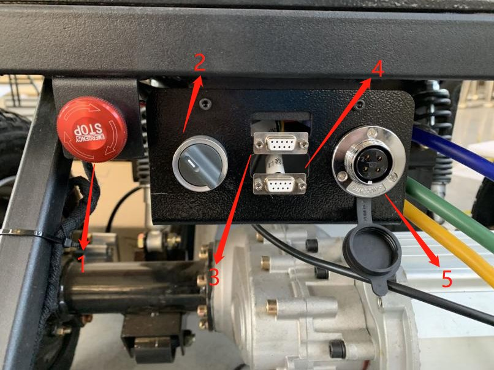
1: 急停开关
2:驱动电机钥匙按钮
3:上装can接口
4:底盘升级口
5:上装供电口
2) 接线说明
a. 上装供电口提供12V和24V两路电源，其中12V电源的供电功率为180W，24V电源的供电功率为360W。下图中的线束为供电线，定义如图所示:
1: 12v 接保险盒，红正黑负
2: 24v 接工控机(工控机后部的凤凰端子)，红正黑负
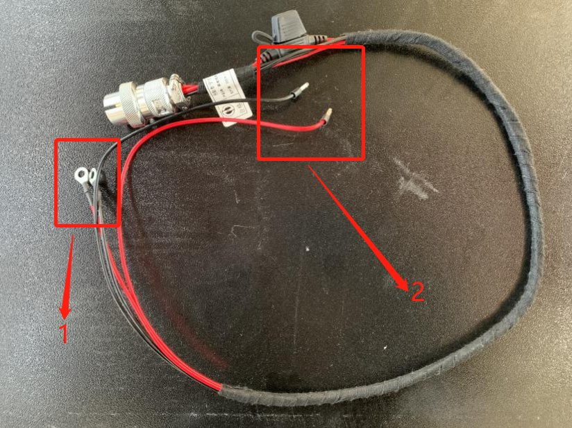
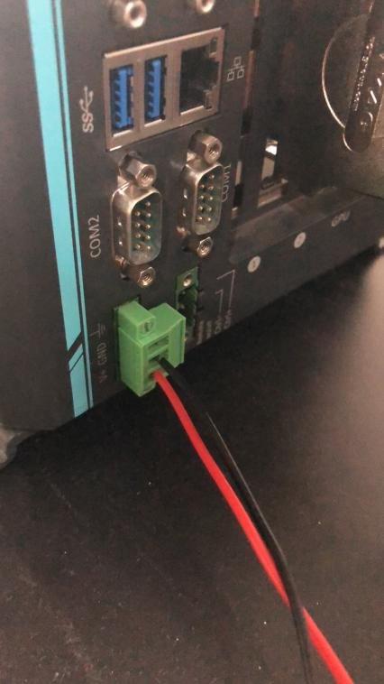
b. 12V电源线需要先接到保险盒的输入端，各12v的用电设备的电源线需要从保险盒的输出端引出。
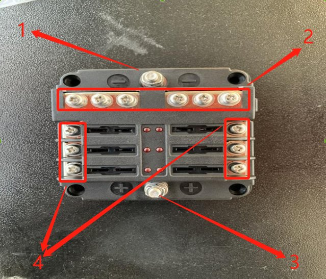
1/3: 保险盒的输出端，１２V的用电设备需要从此处引出，靠近输入负接线柱的６个端子为输出负接线端子
2/4: 从底盘引出的１２V线需要接到保险盒的输入端
c: 用下图中的延长线连接上装CAN接口盒工控机内CAN卡的接口
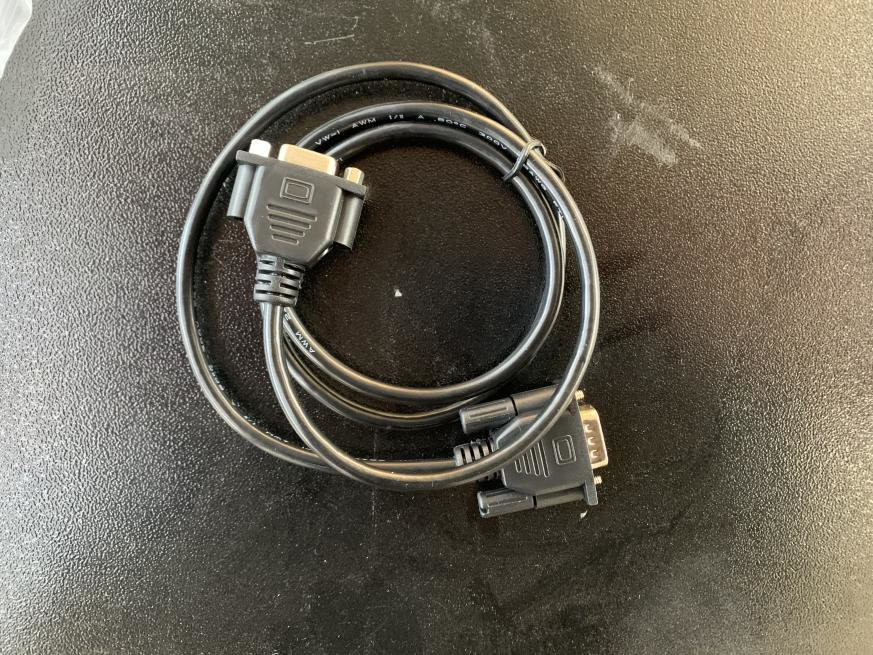
d: 显示屏供电线
下图中的显示屏供电线，一端接保险盒的输出端，另一端接显示屏底部的供电接口。
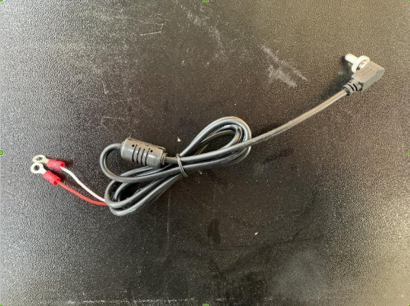
e: 驱动电机钥匙旋钮
驱动电机钥匙旋钮在左侧为关闭状态，在右侧为开启状态。驱动电机钥匙旋钮开启时才能控制驱动电机动作。
11. 免责声明¶
1）. 本手册在印刷时已尽可能的包含各项功能介绍和使用说明。但由于产品功能不断完善、设计变更等，仍可能与您购买的产品有不符之处。由于产品更新，本手册与实际产品在颜色、外观等方面可能有所偏差，请以实际产品为准。
2）. 为保护用户的合法权益，请您在使用本产品前务必仔细阅读我们随附本产品提供的说明书。套件提供商保留对上述文档进行更新的权利。请您务必按照说明书和安全须知操作本产品。
3）. 本产品不适合未满18周岁及其他不具备完全民事行为能力的人士使用，请您避免上述人士接触本产品，在有上述人士出现的场合操作时请您格外注意。
4）. 一旦开始使用本产品，即视为您已阅读、理解、认可和接受本产品的说明书、免责声明的全部条款和内容。使用者承诺对自已的行为及因此而产生的所有后果负责。
5）. 在使用本产品的过程中，请您务必严格遵守并执行包括但不限于说明书里的要求。对于违反说明书所提示的使用行为或不可抗因素导致的一切人身伤害、事故、财产损失、法律纠纷，及其他一切造成利益冲突的不利事件，均由用户自己承担相关责任和损失，套件提供商将不承担任何责任。
6）. 用户使用本产品直接或间接发生的任何违反法律规定的行为，套件提供商将不承担任何责任。